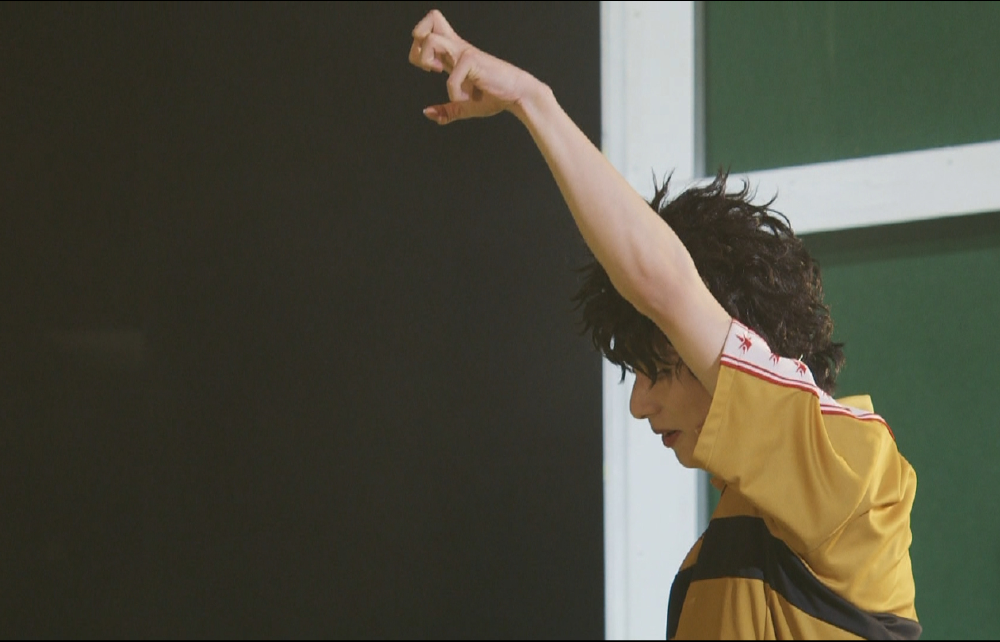

ナックルサーブ｜Observation Notes
本人以外どこに跳ねるか予測のつかないサーブ。
指を立ててボールを握り、押し出すようにトスをあげることで特殊な回転をかけている。
赤也はラフプレー傾向が強いため、相手の膝を直接狙いがち。試合がテンポアップしてきた際は注視する必要あり。
技の評価
やはり予測のつかなさがこのサーブの強さだ。その上で威力も高く、試合の決定打となる場面多数。
ただしそれは相手の膝の怪我を狙った結果であることも多いため、使用頻度やタイミングはこちらである程度管理する必要がある。
- 球威 ：◎
- 使い勝手：△
- 回転量 ：◎
- 決定力 ：◎
▶ 観察記録ファイル（全7枚）



×